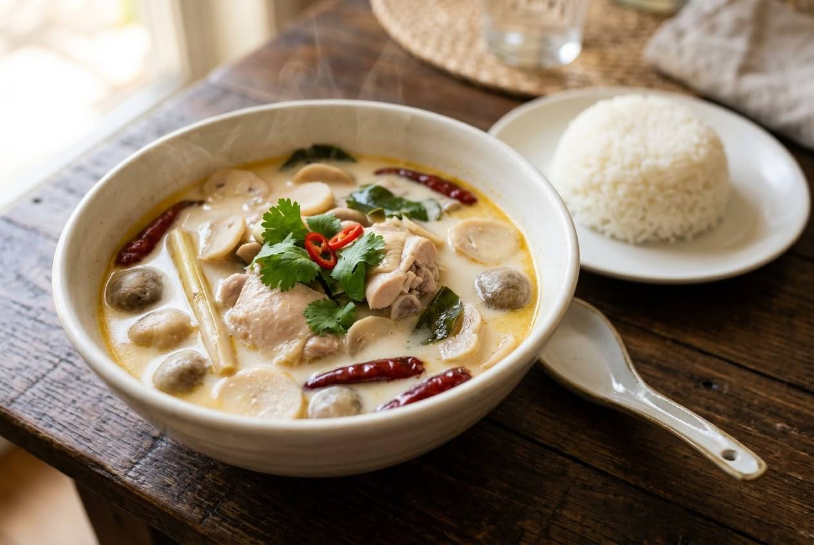

Galangal simmered gently in coconut milk, chicken poached in the aromatics, cream added late, lime squeezed in off the heat. The real version has no dairy and no ginger.

Tom kha gai is the only Thai soup named after an ingredient: ข่า (kha), the galangal. Its gentle heat — lighter than ginger, more floral than lemongrass — defines the whole dish. R-HAAN, the two-Michelin-star restaurant whose chef feeds the world's leaders, calls it "a poem of flavour": coconut milk's richness, galangal's soft heat, lemongrass and makrut's fragrance, lime's fresh sour, all in balance. It moved from royal court tables to every home kitchen in the country.
And Thai cooks are protective of it. On Pantip, when a home cook asked when to add lime so her milk version wouldn't split, the replies came back in verse: "The real thing must be coconut milk. Don't be weird and add milk — bitter and sad." The dairy version is not a variation; it's a different soup.
| Thai | English | Amount |
|---|---|---|
| สะโพกไก่ (หั่นชิ้น) | Chicken, thighs preferred, cut bite-size | 400–500 g |
| หางกะทิ | Coconut milk (the base) | 500 ml |
| หัวกะทิ | Coconut cream (added late) | 250 ml |
| ข่าอ่อน (แว่นบาง) | Galangal, peeled, sliced thin | 8–10 slices |
| ตะไคร้ (ทุบ, ท่อน) | Lemongrass, bruised, cut | 2–3 stalks |
| ใบมะกรูด (ฉีก) | Makrut lime leaves, torn, midrib out | 5–6 |
| หอมแดง (บุบ) | Shallots, bruised | 4–5 |
| พริกขี้หนูสด (บุบ) | Fresh bird's eye chillies, bruised | 5–8 |
| เห็ดฟาง | Straw mushrooms, halved | 200 g |
| น้ำปลา | Fish sauce | 2–3 tbsp |
| เกลือ | Salt | ½ tsp |
| น้ำมะนาว | Lime juice — off the heat | 3–4 tbsp |
| ผักชี | Coriander leaves, to finish | a handful |
Galangal only. The truly old home version skips lemongrass and makrut leaves entirely — galangal alone in coconut milk, and you chew the cooked slices as a vegetable. Mahidol confirms young galangal is eaten whole.
Clear or creamy? A genuine Thai debate: some argue the original tom kha is the clear version, and the coconut-milk one is really tom yum nam khon with galangal. The creamy version won the streets.
Nam phrik phao. The roasted chilli paste floating on top is a modern Bangkok flourish — the classical recipes don't have it.
Mushrooms. Straw mushrooms are standard (Mahidol), but R-HAAN notes they're optional — and must never drown the herbs, which are the point.
Protein. Chicken is the name; prawn (tom kha goong) exists but Mahidol says it's far less common.
This recipe is translated from the following Thai-language sources. Where they disagree, we've said so.
1. R-HAAN (2 Michelin stars), July 2026 — "เปิดสูตรต้มข่าไก่ เมนูต้นตำรับโบราณ ซุปสมุนไพรที่โลกหลงรัก" — r-haan.com
2. Institute of Nutrition, Mahidol University — "ต้มข่าไก่" (official Thai recipe, 10 servings) — inmu.mahidol.ac.th
3. Pantip thread 35758625 — "ต้มข่าไก่นมสด ใส่มะนาวตอนไหน" (the dairy-milk debate) — pantip.com
4. Pantip thread 30105577 — "อะไรคือความแตกต่างที่แท้จริงของ ต้มยำไก่ หรือ ต้มข่าไก่" (clear vs creamy debate) — pantip.com